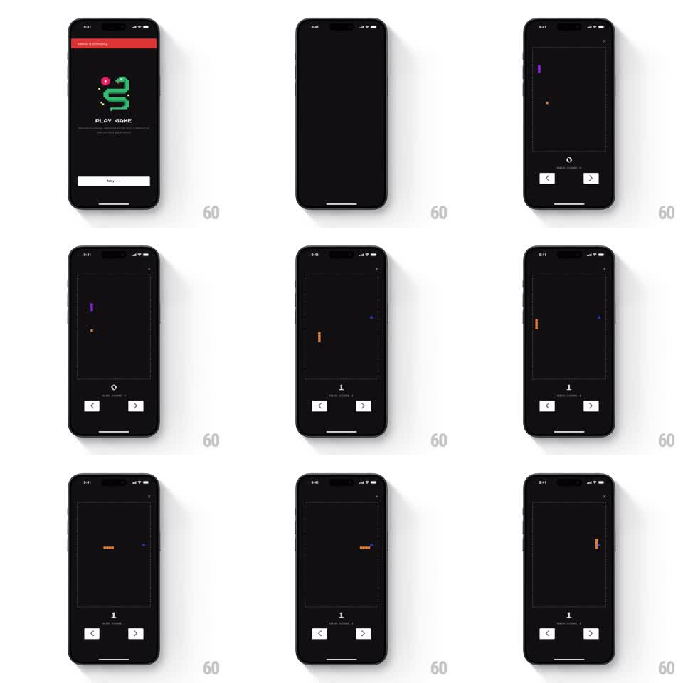

Media
Frame-by-frame

Rebuild this interaction 1:1: CRED's offline easter egg - when the app loses connection, a retro 8-bit snake game takes over, playable with two chunky arrow buttons and a score counter.

Rebuild this interaction 1:1: CRED's offline easter egg - when the app loses connection, a retro 8-bit snake game takes over, playable with two chunky arrow buttons and a score counter.
## Integration
Integration: stack-agnostic spec - springs given as stiffness/damping, timed motions as duration + curve; map every value to your framework and animation library of choice.
## Scene
Entry: black screen, red "internet is still missing" banner up top, a pixel-art green snake wrapped around a pink apple, "PLAY GAME" title, a Retry button. Game screen: a dashed-border dark playfield filling most of the screen, a center score readout ("0", "high score: 0") below it, and two large arrow buttons (< and >) bottom-left and bottom-right.
## Motion spec
Pattern: 8-bit snake on a turn-based grid.
- Transition in: the entry screen crossfades to the playfield (~250ms); the snake (3 segments, purple-orange) spawns center with a 1-bit blink.
- The snake moves on a fixed tick (~6 cells per second), each segment snapping cell-to-cell - no smoothing, the steppy motion is the aesthetic.
- Arrow buttons rotate the snake 90deg left/right relative to its heading; button press flashes the button face (~100ms).
- Eating the apple (a single bright pixel) grows the snake by one segment, pops the score counter (scale 1.0 to 1.3 and back, 150ms), and respawns the apple at a random free cell.
- Collision with self or wall: the snake blinks three times (~80ms per blink), then a game-over state resets the field.
## Calibration
- Keep the tick rate constant and visible; variable speed smooths away the retro feel.
- Buttons are big and thumb-distant - this is played one-handed while waiting for connectivity.
## Reduced motion
Same game; only the score pop and blink effects are removed.
## Don't miss
- Everything is pixel-sharp: nearest-neighbor rendering, no antialiasing, dashed playfield border.
- The red offline banner from the entry screen is the context - the game exists because the network is gone, so keep the tone playful, not an error state.